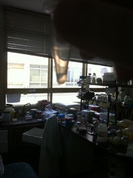
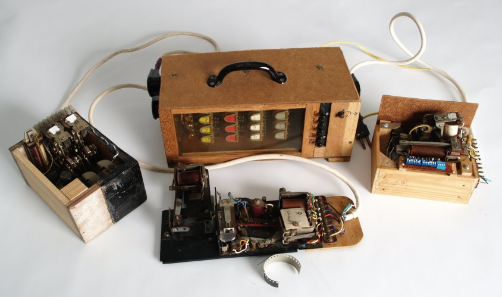
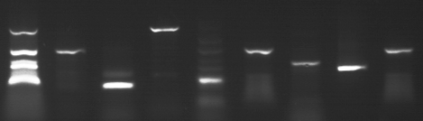
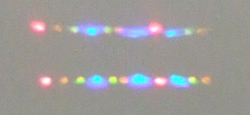

Niall Murphy
Ναϊλ Μερφη Найл Мерфи Նէալ Մօրֆի नाइल मर्फी నాయల్ మర్ఫీ ไนเอล เมอร์ฝีย์ נייל מורפי نايل مورفي 耐尔 墨菲 나일 머피 ナイル マーフィー なぃる まーふぃーSummary
I am a contract scientist at the
Bio-Computation group at Microsoft Research Cambridge, UK
working on implementing a stochastic back-end for
CellModeller.
Previously, I was a postdoctoral fellow working with
Alfonso Rodríguez-Patón
and the LIA group
in Faculty of Informatics in the Universidad Politécnica de Madrid.
My research interest is the intersection of biology and computation. Current projects and interests include, in no particular order:
- Studying the spread of plasmids in bacterial colonies by conjugation.
- Understanding co-evolution between bacteria and bacteriophages.
- Controlling spatial pattern formation in bacterial colonies.
- Chemical reactions/gene networks as information processing systems.
Here is my first plasmid. 
My PhD thesis was on identifying what classes of problems can be tackled by an abstract mathematical model of cellular division. My special focus was on problems that could be solved using a feasible amount of time and very little memory (molecules). "Uniformity conditions for membrane systems: Uncovering complexity below P" (pdf), and is from the Computer Science Department of NUI Maynooth. My supervisors were Damien Woods and Tom Naughton. I defended my thesis in March 2010.
Publications by topic
Natural Computing
N. Murphy & A. Rodríguez-Patón "Distributed Computing With Prokaryotic Immune Systems" ICARIS 2012, Workshop on Bio and Immune Inspired Algorithms and Models for Multi-Level Complex Systems, Sept 2012. Springer LNCS Vol. 7597 pdf (Invited speaker)
N. Murphy, D. Woods and T.J. Naughton, "Bio-Computation using Holliday junctions", 4th International Conference on Information and 4th Irish Conference on the Mathematical Foundations of Computer Science and Information Technology (MFCSIT), pp. 317-320, Cork, Ireland, 1-5 August 2006. pdf
N. Murphy, D. Woods and T.J. Naughton, "On the computational complexity of photosynthesis", NUIM Tech Report NUIM-CS-TR-2005-03, Sept 2005, Department of Computer Science, National University of Ireland Maynooth, Ireland. pdf
Computational complexity and membrane systems.
Niall Murphy and Damien Woods "AND and/or OR: Uniform polynomial-size circuits", arXiv:1212.3282 [cs.CC] Dec 2012
Antonio E. Porreca, Niall Murphy, and M.J. Pérez-Jiméz "An Optimal Frontier of the Efficiency of Tissue P Systems with Cell Division", In Proceedings of the 10th Brainstorming Week on Membrane Computing, 2012. pdf
N. Murphy & D. Woods. "Uniformity: Uncovering the Frontier of Parallelism", Proceedings of the 10th Workshop on Membrane Computing, Curtea de Argeş, Romania. 2009. pages 556-560. pdf
N. Murphy & D. Woods. "A characterisation of NL using membrane systems without charges and dissolution", Proceedings 7th International Conference on Unconventional Computing 2008, Vienna, Austria. Springer Lecture Notes in Computer Science, vol 5204 , pp 164-176 pdf Link
Uniform families vs. Semi-uniform families.
When solving problems with biological computers, it sometimes seems more intuitive to directly encode a problem instance into the computation machinery. For example, many of the first DNA computers directly encoded problem instances into experimental protocols so that a unique protocol was required for each instance of the problem considered. This way of encoding a problem is known as semi-uniformity in contrast to the more general uniformity (e.g.\ Boolean circuits) where there is one device to solve all problem instances of a certain size. Previously most researchers intuitively felt that while uniformity was more desirable than semi-uniformity the two concepts were computationally identical. We show that for a simple class of circuits, uniform families are strictly weaker than semi-uniform ones. This result is applicable to any implementation of family style computing systems (e.g.\@ Boolean circuits, membrane systems, DNA strand displacement etc.). I have improved, expanded, and refined this work since the original (best student paper award, DNA 16) conference paper~\cite{MW2010dna}. While preparing this work for a journal publication we greatly extended and improved on the original result~\cite{uniformityarxiv2012} this work was presented at the ``Machines Computation and Universality'' conference 2013 at ETH Zurich. Before my award winning research, the complexity community intuitively felt that: while devices that accept many inputs (uniform) are more desirable than a ``one-shot'' hard coded device (semi-uniform), the two concepts were computationally identical. My research proved that for a simple example, this is not the case~\cite{MW2014}! This result resolved an open question in membrane computing and won the \emph{best student paper prize} at the DNA 16 conference~\cite{MW2010dna}. We improved, strengthened and refined the work to the point that we could make a contribution to mainstream complexity theory~\cite{MurphyWoods2013}. The result is applicable to many biological methods of computing such as chemical reaction networks and DNA strand displacement.
here we apply the result to membrane systems.
N. Murphy & D. Woods. "Uniformity conditions in natural computing", preproceedings of DNA16 2010. (Best student paper award)
here we apply the result to membrane systems.
N. Murphy & D. Woods. "The computational power of membrane systems under tight uniformity conditions" pdf (Invited) Natural Computing: Volume 10, Issue 1 (2011), Page 613. Link.
Here we explore the effects of tight Here we give the proof that semi-uniform membrane systems here we apply the result to membrane systems.
N. Murphy & D. Woods. "On acceptance conditions for membrane systems: characterisations of L and NL", The Complexity of Simple Programs, Cork, Ireland, 6-7 December, 2008. Cork University Press, pages 225-242. EPTCS volume 1 pages 172-184 arXiv:0906.3327v1 [cs.CC] pdf
Here we investigate how different interpretations of the definitions of membrane systems can result in a change in the computing power of the system. This idea was revisited more throughly in "Uniformity is weaker than semi-uniformity for some membrane systems" above.
N. Murphy & D. Woods. "A characterisation of NL using membrane systems without charges and dissolution" Unconventional Computing 7, 2008. LNCS 5204, 164--176. pdf
This paper is the first time tight uniformity conditions were applied to membrane computing and highlighted that for active membrane systems without dissolution, the previous upper bound could be improved exponentially. This idea was revisited more throughly in "The computational power of membrane systems under tight uniformity conditions" above.
Hasenjaeger's universal machine.
In the early 1960's Gilbert Hasenjaeger built several mechanical devices to demonstrate the concept of a Turing machine to his students at the Universities of Münster and Bonn. Using old telephone relays and rotary switches forced him to build a machine that uses remarkably few rules and to simulate a simple non-erasing model, namely Wang's B machines.
B machines have been used to show that a number of other models are universal over the past 60 years. Unfortunately, via previous proofs, these models suffered from an exponential slowdown when simulating Turing machines. We show that Wang's B machines actually simulate Turing machines in polynomial time.
Since Hasenjaeger's machine simulates Wang B machines, it too is an efficient model of computation.
Hasenjaeger's machine is currently on display in the Heinz Nixdorf MuseumsForum, Germany, and a video of the machine in action can be seen here or here.
The P-Conjecture and the computational power of cellular division.
Membrane systems, or P-systems are a model of computation that abstracts the inner workings of cells. Using this model we can characterise the sets of problems that membrane systems can solve with limited resources. The hope is that as efforts to implement cellular computers progress that the theoretical results from membrane systems will be a guide to synthetic biologists as to how different cellular mechanisms affect the computing power of the resulting cell.
Cell division seems to allow computers implemented in living cells to create an exponential number of self-replicating parallel computing devices. While in the real world, this level of perfect parallelism is impossible, some level of parallelism is often desirable.
The P-Conjecture, stated in 2007 asks what features of membrane computing are essential to take advantage of the exponential growth of membrane systems. In particular it asks: if cells have no way to indicate an internal change of state to the outside world, can the overall system be parallel?
For a system to be parallel we show that it can solve problems in PSPACE in polynomial time, or problems in NC in poly-logarithmic time. To show a system is sequential, that is, that it probably (assuming that NC ≠ P, or P ≠ PSPACE) can never be parallelised, we show that it exactly characterises the complexity class P.
The original statement of the P-Conjecture remains unsolved, but my co-authors and I have made significant progress.
This paper is the closest result to finally resolving the P-Conjecture. We showed that if both daughter cells resulting from a division are identical, that is the division was symmetric, that the system probably cannot solve problems in a parallel way. By storing just a single copy of each archetype membrane and then manipulating counters as the system develops over time we can simulate such a system in a standard computer using polynomial time and memory.
In this paper we consider a system that uses only two rules, cell division and cell dissolution. These rules were key to providing parallelism in other P-conjecture attempts. We showed that with just this combination that the exponential number of membranes can be compressed into a polynomially sized tree and that by following the movement of objects around this tree needs only polynomial time.
In this technical report we find a possible link between the degree of power of division in a system, and the resulting degree of parallelism. We hope that by trying to characterise the Polynomial Hierarchy we would gain insight into the P-Conjecture.
Models of Physical Sorting.
There are theoretical limits on how fast we can sort a list of numbers. However, in their daily activities, physical scientists routinely sort millions of molecules. In fact, the number of molecules being sorted does not affect the time needed. Instead the resolution of the sorted list increases with time.
For example, microbiologists sort millions of DNA molecules by length.  (Image supplied by Beverley Henley and Kieran McDermott.)
Similarly, a prism can sort innumerable beams of light according to their wavelength. 
Could it be possible to use a special purpose hardware component that we could plug into a standard computer to sort in constant time? We look at several processes: gel electrophoresis, chromatography, optical tweezers, refraction of light, and mass spectrometry. From these we abstract a model of computation that captures a general method of physical sorting. While this model allows us to sort a list in constant time, there is a major bottle neck. For such a device to be useful it must connect with a standard computer, such as a Turing machine or Boolean circuit. Unfortunately, inputting the list to sort or reading off the output makes our super fast sorting device behave just as poorly as a standard sequential algorithm.
N. Murphy, T.J. Naughton, D. Woods, B. Henley, K. McDermott, E. Duffy, P. J. M. van der Burgt, and N. Woods, "Implementations of a model of physical sorting" 2008, vol 4,8 pp 3-12, International Journal of Unconventional Computing. pdf
N. Murphy, T.J. Naughton, D. Woods, B. Henley, K. McDermott, E. Duffy, P. J. M. van der Burgt, and N. Woods, "Implementations of a model of physical sorting", Sept 2006, From Utopian to Genuine Unconventional Computers, Part of the 5th International Conference on Unconventional Computation (UC 2006), pp. 79-99, Luniver Press. ISBN: 0-9551170-9-7. pdf